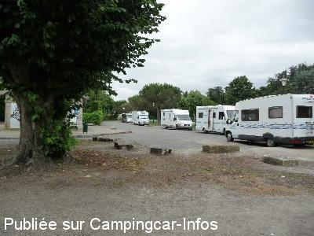
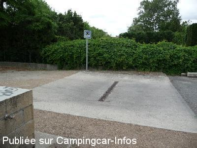
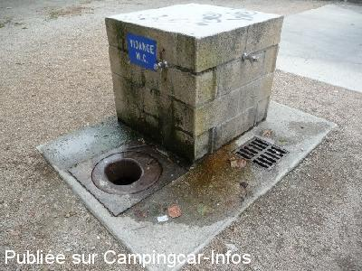
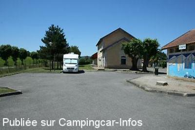
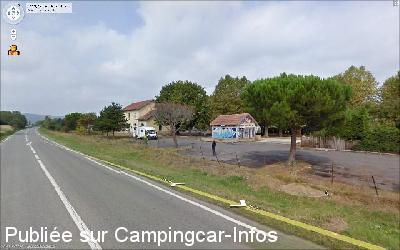
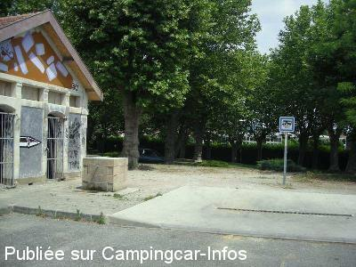

ASN = Aire de services avec stationnement nuit possible de :
MIREPOIX
(N° 315)
Accès/adresse :
Allée des Soupirs
09500 MIREPOIX
09500 MIREPOIX
Latitude : (Nord) 43.08505° Décimaux ou 43° 5′ 6′′
Longitude : (Est) 1.87426° Décimaux ou 1° 52′ 27′′
Tarif : Gratuit
Type de borne : Artisanale
Services :


commerces à proximité
Autres informations :
Tél mairie : +33(0)561 681 047
http://www.mirepoix.fr

Le 03/10/2012 par cathare

Le 03/10/2012 par cathare

Le 03/10/2012 par cathare

Le 09/08/2011 par Iakito

Le 04/04/2010 par F 5SPJ

Le 10/07/2008 par FAROME 76
de
soleil11700
le 13/03/2016 :
agrandissement de l"aire de stationnement bien agréable a cote de l"aire de service calme a proximité des commerce ville a visiter maison a colombage la place leglise. fête des pommes a voir de passage le 12/02 2016 Cordialement JMA
agrandissement de l"aire de stationnement bien agréable a cote de l"aire de service calme a proximité des commerce ville a visiter maison a colombage la place leglise. fête des pommes a voir de passage le 12/02 2016 Cordialement JMA
de
CROUZEVIALLE
le 11/09/2014 :
Bonjour, aire bien placée pour visiter la ville et son marché. WC propres. Un peu bruyante sauf de 23h à 5h. Merci à la municipalité pour la gratuité. Belle astuce pour l'eau propre.
Bonjour, aire bien placée pour visiter la ville et son marché. WC propres. Un peu bruyante sauf de 23h à 5h. Merci à la municipalité pour la gratuité. Belle astuce pour l'eau propre.
de
FOURNIER JACQUES
le 30/12/2011 :
Aire pas calme du tout, avec des camions qui passent à 90 Km/h à 20 mètres... pas calme du tout !!!
En plus beaucoup de vent, mais ça...
Par contre c'est bien agencé et facile à manoeuvrer (7m80)
La ville est tout simplement somptueuse, à voir.
Conclusion : Mirepoix - OUI, l'aire... faut voir.
Aire pas calme du tout, avec des camions qui passent à 90 Km/h à 20 mètres... pas calme du tout !!!
En plus beaucoup de vent, mais ça...
Par contre c'est bien agencé et facile à manoeuvrer (7m80)
La ville est tout simplement somptueuse, à voir.
Conclusion : Mirepoix - OUI, l'aire... faut voir.
de
LASSERRE
le 13/06/2011 :
Aire superbe, calme et tout près du centre ville et les fameux "couverts". Les toilettes sont neuves et les abords très agréables. Il y a de la place et le site de l'ancienne gare a beaucoup de charme. Services gratuits et borne pratique.
Aire superbe, calme et tout près du centre ville et les fameux "couverts". Les toilettes sont neuves et les abords très agréables. Il y a de la place et le site de l'ancienne gare a beaucoup de charme. Services gratuits et borne pratique.
de
f 5spj
le 04/04/2010 :
Pour y avoir été, très près de la route, un peu bruyant à certains moments, sinon parking de l'ancienne gare comme neuf, très près du centre ville, grande allée pour promener toutou.
Pour y avoir été, très près de la route, un peu bruyant à certains moments, sinon parking de l'ancienne gare comme neuf, très près du centre ville, grande allée pour promener toutou.
de
vero
le 02/08/2009 :
Juste assez bien pour un pique-nique dans le parc, derrière vers l'aire de jeux, mais les nuits doivent être bruyantes, les toilettes sont sales.
Juste assez bien pour un pique-nique dans le parc, derrière vers l'aire de jeux, mais les nuits doivent être bruyantes, les toilettes sont sales.
de
A.Charnay
le 27/07/2008 :
De passage en juillet, pour séjourner sur cette aire, il faut des protections auditives renforcées! et vu l'état de l'endroit, même les gens du voyages n'en voudraient pas, j'ai passé la nuit au calme près du stade, mais n'ai fait aucun achat dans cette commune.
De passage en juillet, pour séjourner sur cette aire, il faut des protections auditives renforcées! et vu l'état de l'endroit, même les gens du voyages n'en voudraient pas, j'ai passé la nuit au calme près du stade, mais n'ai fait aucun achat dans cette commune.
de
FAROME 76
le 10/07/2008 :
Bien pour stationner et visiter le village
Bien pour stationner et visiter le village
de
coco34
le 07/05/2008 :
Passé fin avril sur cette aire, parallèle à la nationale, taguée et très malprope. Je ne suis pas resté malgré un village plutôt sympathique. Dommage!
Passé fin avril sur cette aire, parallèle à la nationale, taguée et très malprope. Je ne suis pas resté malgré un village plutôt sympathique. Dommage!
de
harivel
le 06/04/2008 :
D'accord avec les derniers commentaires, ville très intéressante mais l'aire taguée et malpropre à revoir. Quant au stationnement n'en parlons pas...
Pourquoi nous met-on toujours dans des endroits pittoyables ? Allez à un parking de Vals à 15kms, que du bonheur!
D'accord avec les derniers commentaires, ville très intéressante mais l'aire taguée et malpropre à revoir. Quant au stationnement n'en parlons pas...
Pourquoi nous met-on toujours dans des endroits pittoyables ? Allez à un parking de Vals à 15kms, que du bonheur!
de
CHOUCHOU49
le 29/12/2006 :
Bonjour. J'ai été vraiment désolé de trouver une aire en si piteux état:
* les locaux sanitaires complètements inutilisables, tagués de partout,
* l'aire de vidanges dans un état de saleté limite de l'insalubrité.
Tout cela pour une aire au bord de la route nationale très bruyante.
Nous avons visité, effectivement cette superbe ville et sommes partis passer la nuit à Fanjeaux (voir commentaires).
Bonjour. J'ai été vraiment désolé de trouver une aire en si piteux état:
* les locaux sanitaires complètements inutilisables, tagués de partout,
* l'aire de vidanges dans un état de saleté limite de l'insalubrité.
Tout cela pour une aire au bord de la route nationale très bruyante.
Nous avons visité, effectivement cette superbe ville et sommes partis passer la nuit à Fanjeaux (voir commentaires).